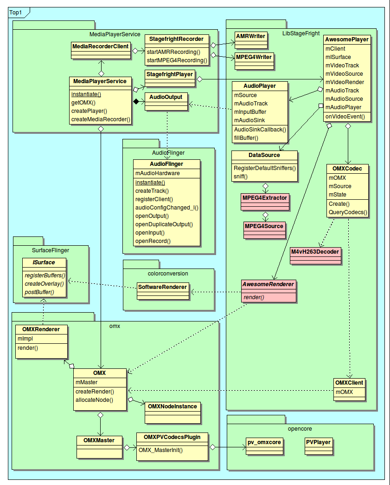
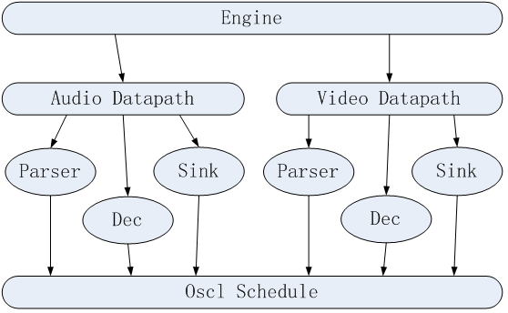
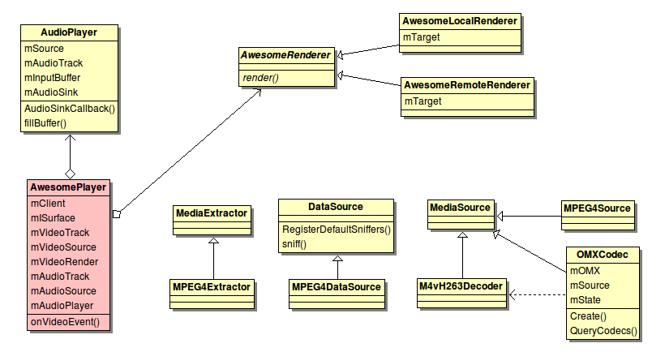

原文地址：http://blog.chinaunix.net/u2/61880/showart_2339481.html
1引言
Android froyo版本多媒体引擎做了变动，新添加了stagefright框架，并且默认情况android选择stagefright，弃用之前的opencore，仅仅对opencore中的omx-component部分做了引用。
Stagefright
自android2.0后才添加，其稳定性有待商榷，是否存在bug也未知，opencore自android诞生起便存在，稳定性有保障。不过，从目前
android代码看，opencore有被stagefright取代的趋势，所以在opencore上所作工作也许会无法沿用。Opencore上的
开发较stagefright上要复杂耗时些。
2框架变动
以MediaPlayer为例，我们先看一下多媒体的简单框架。

上图可知，stagefright是在MediaPlayerService这一层加入的，和opencore是并列的，在选用opencore还是stagefright的代码切换上也非常容易。
具体stagefright的内部变动，可见下图概述。Stagefright并没有完全抛弃opencore，主要是做了一个OMX层，用来引用
opencore的omx-component部分。而stagefright内部而言，与opencore是完全不同的设计。

3具体差异
3.1所支持的文件格式
Opencore所支持的格式。

Stagefright所支持的格式。

3.2 Parser和codec部分开发有差异
Opencore
与stagefright两套机制，对于我们的开发而言，主要体现在parser和codec部分。Opencore方面，必须按照其规范完成相应的
parser-node，codec则要按照omx规范实现相应的component。Stagefright方面，则要按照其规范实现相应的
extractor和decoder。
最基本的实现，二者是相同的，可以共用，差别在封装上，opencore难度和工作量要大。
3.3 数据处理机制不同
Opencore处理流程如下图示。

engine分别创建audio/video datapath，parser/dec/sink作为node节点由各自datapath连接起来，后续node节点由统一调度器调度。
Stagefright处理流程如下图示。

Audioplayer
为AwesomePlayer的成员，audioplayer通过callback来驱动数据的获取，awesomeplayer则是通过
videoevent来驱动。二者有个共性，就是数据的获取都抽象成mSource->Read()来完成，且read内部把parser和dec
绑在一起。
Opencore和stagefright处理机制对比：
（1）Opencore的parser与dec是分离的，各行其职；stagefright则是绑在一起作为一个独立的原子操作。
（2）Stagefright通过callback和videoevent来驱动数据输出；opencore是通过sink-node节点控制输出。
（3）Opencore中parser/dec/sink是并行处理的；stagefright中为串行处理。
3.4 AV同步
Opencore有一个主clock，audio/video分别与该主clock同步，作为输出的判定依据，且audio会不断校准主clock。
Stagefright部分，audio完全是callback驱动数据流，video部分在onVideoEvent里会获取audio的时间戳，是传统的AV时间戳做同步。
3.5 稳定性
客观来讲，opencore存在时间长，相对稳定；stagefright刚推出，肯定会有未预知的bug存在。
4 总结
1.Opencore相对成熟稳定，作为框架采用，风险小；parser/codec集成相对复杂，如果android后续版本弃用opencore转用stagefright，那多媒体引擎的选择是个问题。
2.Stagefright新推出，肯定有未预知的bug，直接采用有潜在风险；parser/codec集成相对容易，架构较opencore做了极大简化，通俗易懂。
3.目前来看opencore支持的文件格式多些。
4.Opencore与stagefright在数据处理机制及AV同步上有很大差异，需要在实际板子上评估性能差异。
5.如果在android froyo版本开发多媒体相关产品，建议采用opencore框架，这样旧版本opencore上的成果可以沿用，且节省项目时间。
6.Opencore支持的文件格式较stagefright丰富。
7.
如果项目研发中android出现新版本，或stagefright做了更新，仍然维持opencore不变，多媒体引擎变更问题待ipad后再议。一种
选择是一直延续采用opencore，或者在适当时候（认为stagefright足够稳定）切换到stagefright。
Stagefright阅读笔记附录
两套方案对比过程中，基本上把stagefright的代码阅读过一遍，摘录如下，以图为主。
Stagefright整体框图。
Stagefrightplayer里awesomeplayer初始化流程

Awesomeplayer框图，其中涵盖主要节点元素。

Stagefrightrecorder部分

MediaPlayer框图。
MediaRecorder框图。

Libstagefright草图，涵盖了主要节点元素。